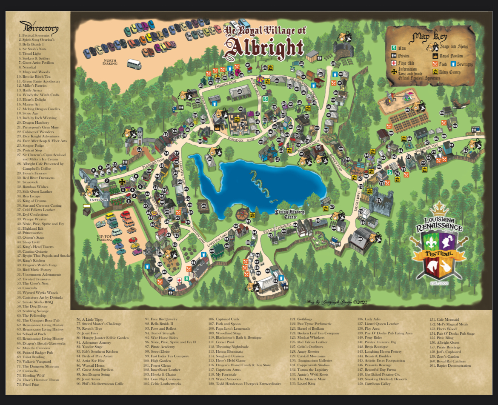

🛡️ Odin's LARF Quest 🛡️
Ralph & Seana's Viking Weekend - Saturday, November 29, 2025
The Saga of Ralph & Seana's Longship
In the misty fjords of Lafayette, Ralph the Bold and his fierce queen Seana set sail on their greatest raid yet: the Louisiana Renaissance Festival's Viking Weekend. With axe-sharp wit and mead-ready hearts, they rally the crew—Ralph's brother, the steadfast shield-bearer, and his lady, a siren of the seas. Together, they storm the Village of Albright, chasing flames of Adamo Ignis, the thunderous clash of armored jousts, the bawdy ballads of Washing Well Wenches, the hypnotic forge of Glass Blowing, and the merry mayhem of Jameson the Juggler. May Odin guide your tankards, Thor guard your feasts, and Freyja bless the laughs. Forge legends, kin—skål to the fray!
⚔️ The Saga Overview ⚔️
- Arrival: 9:30 AM (gates ~9:45 AM)
- Departure: After 5:00 PM closing
- Focus: Openings/closings + one-time must-sees (Jameson Juggler, Adamo Ignis fire, Armored Joust, Glass Blowing demo, Washing Well Wenches) + unique Viking extras
- Total Trek: ~2 miles (3-10 min between spots; central hub = Village Commons by lake)
- Viking Oath: Norse battles, folk runes, mead rivers—forge your legend!
Runestone Wisdom: Sturdy boots for fjord paths. Quaff mead (#67 Compass Rose). Feast on turkey legs (#152 Woodfield Meals). Skies: Mild 60s°F—cloak like a berserker! LARF app for ravens' whispers.
🗺️ The Rune Timeline 🗺️

🗺️ The Village Map 🗺️

| Time Slot | Quest | Longhall (Map Guide) | Glory & Lore |
|---|---|---|---|
| 9:30-9:45 AM | Arrival & Entry | Front Gate (south fjord) | Anchor ships south off River Rd. Arm with Viking steel (#1 Spirit Works). *Trek: N/A.* |
| 9:45-10:00 AM | Opening Ceremonies Royal Welcome + Opening Cannon |
Front Gate → Village Commons (central) | Queen's hail + thunderous BOOM! Forge pics! *Trek: 1 min north.* |
| 10:15-10:30 AM | Must-See: Jameson the Juggler (Once) | Queen Stage (central-north) | Comedy runes & juggler's saga. Crowd revels! *Trek: 2-3 min.* |
| 10:30-11:00 AM | Unique Extra: Mad Erik's Magic Show + Explore | Ordo Arena (central-east woods) → Badger Blvd (west) | Arcane illusions + hoard shops (#91 Jewelry). Ale brew (#88 Kitchen). *Trek: 3-5 min west.* |
| 11:00-11:30 AM | Must-See: Glass Blowing Demo (Once) | Glass Blowing Stage (west Badger Blvd) | Forge Viking chalice + artisan lore. Claim relic? *Trek: 2 min.* |
| 11:30 AM-12:15 PM | Unique Extra: Parade to Joust + Must-See: Adamo Ignis Fire (Once) | Joust Arena (east dragon spire) | Warrior march to flame runes/danger. Berserker thrill! *Trek: 5-7 min east. Claim thrones early.* |
| 12:15-12:45 PM | Must-See: Armored Joust (Once) + Break | Joust Arena | Knight clashes & lance storms. Epic fray! *Trek: Hold ground. 10-min saga breath.* |
| 12:45-1:15 PM | Must-See: Washing Well Wenches (Once) + Lunch | Yonder Stage (northwest lake) → Tasting Glen (central) | Siren songs + feast haunch (#152 Meals). *Trek: 4 min. 20-min hall revel.* |
| 1:15-1:45 PM | Unique Extra: Chaste Treasure Bawdy Songs + Buffer | Painted Badger Pub Stage (west) | Ribald shanties. *Trek: 3-5 min west. Hearth rest.* |
| 1:45-2:15 PM | Unique Extra: Birds of the Gauntlet Falconry | Joust Arena area (east) | Storm wings & eagle omens. Norse bond! *Trek: 5 min east. Optional saga.* |
| 2:15-2:45 PM | Unique Extra: Dynamic World Music + Stroll | Compass Rose Stage (central) | Nordic harp echoes. Mead muse! *Trek: 3 min. Quaff deep.* |
| 2:45-3:30 PM | Free Time: Shops & Mead Tasting | Flexible → Tasting Glen | Hide armors (#144), relics (#106). Sat nectar rite! *~45 min wander.* |
| 3:30-4:00 PM | Unique Extra: Sword/Rapier Exhibition | Royal Pavilion (central-north) | Blade dances & honor trials. *Trek: 2 min north.* |
| 4:00-4:30 PM | Buffer: Last Shops or Music | Badger Blvd or Compass Rose | Rover's Way saga peek. Hoard final! *Flexible trek.* |
| 4:30-5:00 PM | Closing Ceremonies Closing Revels + Closing Cannon |
Queen Stage → Front Gate | Valhalla toasts & final thunder. Eternal huzzah! *Trek: 5-10 min south.* |
ᚦ Why This Saga Endures ᚦ
- Etched in Stone: Times forged from official runes (e.g., Adamo 11:30 no clash; Wenches 12:45 post-feast).
- One Eternal Strike: Prime halls for valor (dawn for mirth, zenith for fray).
- Balanced Edda: 40% quests, 30% halls, 30% free for raven hunts & axe throws.
- Swift Oar: Central anchors—spare the weary legs.